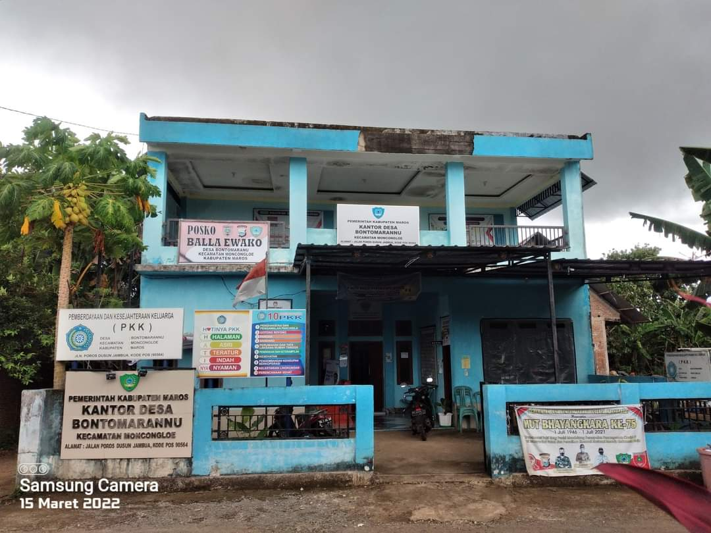

Desa Bonto Marannu Kabupaten Maros
Adalah nama sebuah desa yang berada di wilayah Kecamatan Moncongloe, Kabupaten Maros, Provinsi Sulawesi Selatan, Indonesia. Desa Bonto Marannu berstatus sebagai desa definitif dan tergolong pula sebagai desa swasembada. Desa Bonto Marannu memiliki luas wilayah 7,78 km² dan jumlah penduduk sebanyak 3.O96 jiwa dengan tingkat kepadatan penduduk sebanyak 393,69 jiwa/km² pada tahun 2023. Pusat pemerintahan desa ini berada di Dusun Jambua. Desa Bonto Marannu membawahi 3 buah dusun, 3 Rukun Warga (RW), dan 17 Rukun Tetangga (RT).
Pada tahun 1992, ketika pemekaran wilayah desa dilakukan, seluruh masyarakat merasa sangat senang dengan adanya pemekaran tersebut karena akan memudahkan mereka untuk menyelesaikan segala macam urusan-urusan, baik dari segi pemerintahan, kebudayaan, perekonomian, dan keagamaan yang tidak lagi menjangkau jarak yang terlalu jauh untuk berkonsultasi dengan pemerintah setempat mereka. Karena kesenangan mereka yang terlalu berlebihan pada waktu itu, hingga muncullah kata "BONTO" dan "MARANNU", yang mana BONTO artinya "ketinggian" dan MARANNU artinya "kesenangan". Kemudian para pejabat pemerintahan yang terlibat dalam perumusan itu, sepakat untuk menggabungkan kedua kata tersebut menjadi "BONTO MARANNU" yang artinya "kesenangan yang terlalu berada pada tingkat ketinggian". Hingga akhirnya terbentuklah nama desa yang disebut Desa Bonto Marannu, dan disepakati untuk keluar dari naungan wilayah Kecamatan Mandai. Desa Bonto Marannu akhirnya disepakati untuk berada di wilayah pemerintah Kecamatan Moncongloe. Nama Bonto Marannu diambil dari Bahasa Makassar, yakni kata Bonto berarti "daratan atau bukit" dan kata Marannu berarti "membuat bahagia atau ceria", jadi kata Bonto Marannu berarti "bukit yang membuat bahagia". Nama Bontomarannu sangat dikenal di kawasan Sulawesi Selatan karena merupakan nama sosok pejuang yang tangguh, yakni Karaeng Bontomarannu yang merupakan Panglima Perang Angkatan Laut Kerajaan Gowa pada masa pemerintahan Sultan Hasanuddin. Keberadaan Angkatan Laut Kerajaan Gowa di bawah komando Karaeng Bontomarannu menjadi armada laut paling modern di wilayah Nusantara saat itu. Jadi, tidak heran jika banyak daerah menggunakan nama Bontomarannu atau Bonto Marannu untuk menghormati kepahlawanannya.
Dan pada saat itu, pejabat pemerintah yang terlibat pada perumusan itu, sepakat untuk menunjuk salah seorang pejabat yang akan memimpin Desa Bontomarannu sebagai pejabat persiapan. Dalam perumusan tersebut, muncullah nama yang ditunjuk untuk menduduki jabatan tersebut, yaitu H. Muhammad Saleh Sau. H. Muhammad Saleh Sau dengan masa jabatan 5 tahun, mulai dari tahun 1992 hingga tahun 1997. Setelah masa pemerintahan H. Muhammad Saleh Sau berakhir, beliau digantikan oleh Nadjamuddin sebagai pejabat sementara yang memimpin Desa Bontomarannu. Beliau hanya mampu bertahan selama 1 tahun masa jabatan dan harus berakhir pada tahun 1998. Pada tahun 1998, Desa Bontomarannu resmi dipimpin oleh salah seorang pejabat yang disebut kepala desa. Pada waktu itu terpilihlah H. Ambo Sappe sebagai Kepala desa yang resmi memimpin masyarakat Desa Bontomarannu. Pemerintahan H. Ambo Sappe mampu bertahan selama masa jabatan 4 tahun, yakni dari tahun1998 hingga tahun 2002. Kemudian digantikan oleh Baharuddin dengan masa jabatan 1 tahun yakni pada tahun 2003. Pada tahun 2003, diadakanlah kembali pemilihan Kepala Desa yang akan menduduki masa jabatan 5 tahun (2003-2007). Dan pada saat itu Baharuddin kembali terpilih untuk menduduki jabatan tersebut selama masa periode 5 tahun. Pada tahun 2007, masa jabatan beliaupun berakhir, dan dilakukan pemilihan yang akan menduduki masa jabatan 2007-2012. Hingga terpilihlah Januddin sebagai Kepala Desa Bonto Marannu. Selanjutnya, Darman Middi terpilih dan menjabat kepala desa pada periode 2012-2018 dan 2019-2025.
Wilayah Desa Bonto Marannu masuk dalam kategori wilayah dataran rendah dengan ketinggian 50 meter di atas permukaan laut.
Beberapa lokasi pada jarak orbitrasi atau pusat pemerintahan dari Desa Bonto Marannu adalah sebagai berikut:
Iklim Desa Bonto Marannu, sebagaimana desa-desa lain di wilayah Indonesia mempunyai iklim kemarau dan penghujan, hal tersebut mempunyai pengaruh langsung terhadap pola tanam yang ada di Desa Bonto Marannu, Kecamatan Moncongloe.
Desa Bonto Marannu memiliki batas-batas wilayah sebagai berikut:
Jarak Kantor Pemerintahan Desa Bonto Marannu dengan ibu kota kecamatan di Moncongloe Bulu adalah 3,5 km dan ibu kota kabupaten di Kota Turikale adalah 16,1 km.
Desa Bonto Marannu memiliki luas 7,78 km² dan penduduk berjumlah 3.124 jiwa dengan tingkat kepadatan penduduk sebesar 393,69 jiwa/km² pada tahun 2023. Adapun rasio jenis kelamin penduduk Desa Bonto Marannu pada tahun tersebut adalah 100,86. Artinya, tiap 100 penduduk perempuan ada sebanyak 100 penduduk laki-laki. Berikut ini adalah data jumlah penduduk Desa Bonto Marannu dari tahun ke tahun:
| Tahun | Laki-laki | Perempuan | Rasio Jenis Kelamin | Jumlah Rumah Tangga | Total Penduduk (jiwa) | Pertumbuhan Penduduk (jiwa) | Kepadatan Penduduk (jiwa/km²) |
|---|---|---|---|---|---|---|---|
| 2011 | 1.061 | 1.175 | 90,30 | 497 | 2.236 | 176 | 287,40 |
| 2012 | 1.085 | 1.200 | 90,42 | 497 | 2.285 | 49 | 293,70 |
| 2013 | 1.090 | 1.200 | 90,83 | 579 | 2.290 | 5 | 294,34 |
| 2014 | 1.095 | 1.255 | 87,25 | 579 | 2.350 | 60 | 302,06 |
| 2015 | 1.108 | 1.280 | 86,56 | 579 | 2.388 | 38 | 306,94 |
| 2016 | 1.121 | 1.292 | 86,76 | 533 | 2.413 | 25 | 310,15 |
| 2017 | 1.133 | 1.330 | 85,19 | 539 | 2.463 | 50 | 316,58 |
| 2018 | 1.145 | 1.355 | 84,50 | 550 | 2.500 | 37 | 321,34 |
| 2019 | 1.157 | 1.380 | 83,84 | 556 | 2.537 | 37 | 326,09 |
| 2020 | 1.435 | 1.422 | 100,91 | N/A | 2.857 | 320 | 367,22 |
| 2021 | 1.526 | 1.513 | 100,86 | 792 | 3.039 | 182 | 390,62 |
| 2022 | 1.537 | 1.541 | 100,86 | 801 | 3.068 | 188 | 392,64 |
| 2023 | 1.529 | 1.567 | 100,86 | 811 | 3.124 | 196 | 393,69 |
Di Desa Bonto Marannu terdapat beragam suku dan penggunaan bahasa. Namun secara mayoritas penduduk Desa Bonto Marannu adalah Suku Makassar dengan menggunakan Bahasa Makassar, Bahasa Melayu Makassar, atau Bahasa Indonesia dalam berinteraksi sehari-hari.
Desa Bonto Marannu memiliki tiga wilayah pembagian administrasi daerah tingkat V berupa dusun sebagai berikut:
Desa Bonto Marannu memiliki 17 wilayah pembagian administrasi berupa rukun tetangga (RT) sebagai berikut:
Berikut ini adalah daftar kepala desa di Desa Bonto Marannu dari masa ke masa sejak pembentukannya pada tahun 1992:
| No. | Foto | Nama | Awal Menjabat | Akhir Menjabat | Keterangan |
|---|---|---|---|---|---|
| 1. | H. Muhammad Saleh Sau | 1992 | 1997 | Pj. Kepala Desa Persiapan; Penjabat Dari Pemkab Maros; Dipilih Secara Aklamasi Oleh Para Pencetus Pembentukan Desa Dan Tokoh Masyarakat | |
| 2. | Nadjamuddin | 1997 | 1998 | Pjs. Kepala Desa | |
| 3. | H. Ambo Sappe | 1998 | 2002 | Kepala Desa Definitif Pertama | |
| 4. | Baharuddin | 2002 | 2003 | ||
| 5. | Baharuddin | 2003 | 2007 | Kepala Desa Definitif; Pemenang Pilkades Bonto Marannu 2003 | |
| 6. | Januddin | 2007 | 2012 | Kepala Desa Definitif; Pemenang Pilkades Bonto Marannu 2007 | |
| 7. | 2012 | 2013 | Plt. Kepala Desa | ||
| 8. | Darman | 2013 | 10 Oktober 2018 | Kepala Desa Definitif, Pemenang Pilkades Bonto Marannu 2012 | |
| 9. | Oktober 2018 | 7 Februari 2019 | Plt. Kepala Desa | ||
| 10. | Darman | 7 Februari 2019 | sedang menjabat | Kepala Desa Definitif; Pemenang Pilkades Bonto Marannu 2018 |
Data informasi mengenai Indeks Desa Membangun (IDM) berperan membantu upaya pemerintah dalam memahami kondisi desa. Data yang diekspos sangat penting dalam perencanaan agar setiap tahun ada peningkatan status desa. Setiap tahun status desa diperbarui sesuai dengan capaian yang ada dalam indeks desa membangun. Tim ahli IDM yang menilai terdiri dari tenaga ahli bidang infrastruktur, pengembangan masyarakat desa, perencanaan partisipatif, dan pelayanan sosial dasar. IDM ini mengukur aspek indeks pembangunan desa, yakni ketahanan sosial, ketahanan lingkungan, dan ketahanan ekonomi. Indeks Desa Membangun meliputi kategori sangat tertinggal, tertinggal, berkembang, maju, dan mandiri. Kategori desa mandiri adalah kategori ideal yang ingin dicapai. Pada tahun 2020, prestasi Indeks Desa Membangun (IDM) dari Desa Bonto Marannu mendapatkan raihan nilai 0,6552 dan diklasifikasikan dengan status desa berkembang di Kecamatan Moncongloe, Kabupaten Maros.
| Tahun | Nilai IDM Desa | Status IDM Desa | Peringkat Dalam Kecamatan | Peringkat Dalam Kabupaten | Peringkat Dalam Provinsi | Peringkat Nasional |
|---|---|---|---|---|---|---|
| 2010 | ||||||
| 2011 | ||||||
| 2012 | ||||||
| 2013 | ||||||
| 2014 | ||||||
| 2015 | ||||||
| 2016 | 0,6001 | Berkembang | 1 | 31 | 879 | 26.220 |
| 2017 | ||||||
| 2018 | 0,5765 | Tertinggal | 5 | 62 | 1.441 | 42.075 |
| 2019 | ||||||
| 2020 | 0,6552 | Berkembang | 4 | 46 | 1.000 | 32.734 |
| 2021 | 0,6552 | Berkembang | 2 | 53 | 1.276 | 37.682 |
| 2022 | 0,7425 | Maju | 4 | 67 | 987 | 17.976 |
| 2023 | 0,7925 | Maju | 3 | 57 | 965 | 18.676 |
Tradisi a'dengka ase lolo di Dusun Jambua Di Dusun Jambua, pesta adat Mappadendang (atau Suku Makassar mengenal istilah A'dengka Ase Lolo) telah menjadi tradisi yang dilakukan pascapanen raya. Tradisi Mappadendang telah dilakukan secara turun temurun di kalangan masyarakat sebagai bentuk rasa syukur masyarakat kepada Sang Pencipta atas rezeki berupa hasil panen yang dianugerahkan kepada mereka. Daftar tradisi yang ada di Desa Bonto Marannu sebagai berikut: 1. Mappadendang/A'dengka Ase Lolo 2. Tudang sipulung/appalili (adat musyawarah)
Desa Bonto Marannu memiliki potensi dalam pemberdayaan tortilla umbi-umbian.